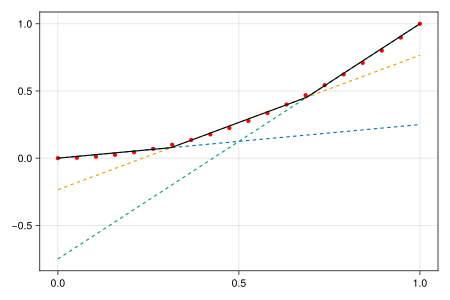

Plot approximation
Some plotting functons are available for visualization of piecewise affine approximations using standard backend packages Makie or Plots.
2D
The following code shows how to the use of a plotting function with Makie:
using PiecewiseAffineApprox, CairoMakie, HiGHS, JuMP
optimizer = optimizer_with_attributes(HiGHS.Optimizer, MOI.Silent()=>true)
x = LinRange(0, 1, 20)
f(x) = first(x)^2
pwa = approx(f, [(0, 1)], Convex(), MILP(;optimizer, planes = 3))
p = plot(x, f.(x), pwa)
save("approx.svg", p)
# output
CairoMakie.Screen{SVG}
3D
Default plot with 3D plot and error distribution for all points as well as allocation to planes for each plot (for Heuristic)
using PiecewiseAffineApprox, CairoMakie, HiGHS, JuMP
using Logging
with_logger(NullLogger()) do
optimizer = optimizer_with_attributes(HiGHS.Optimizer, MOI.Silent()=>true)
I = 100
xmat = 2 * rand(2, I) .- 1
x = [Tuple(xmat[:, i]) for i = 1:size(xmat, 2)]
z = [p[1]^2 + p[2]^2 for p in x]
vals = FunctionEvaluations(x, z)
pwa = approx(
vals,
Convex(),
Cluster(; optimizer = HiGHS.Optimizer, planes = 9, strict = :none),
)
p = plot(vals, pwa)
save("approx_3D.png", p)
end
# output
CairoMakie.Screen{IMAGE}